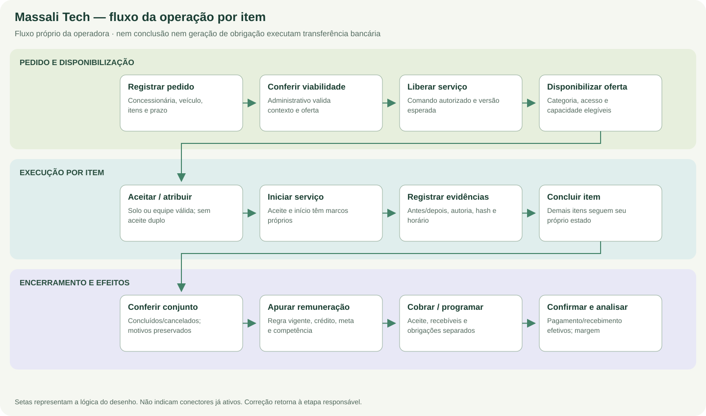
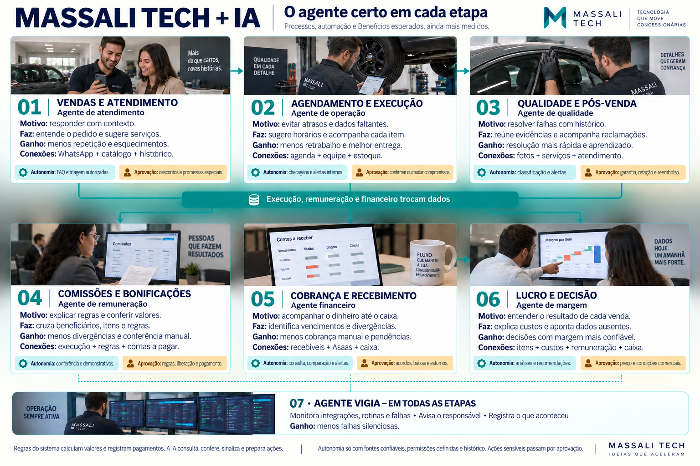
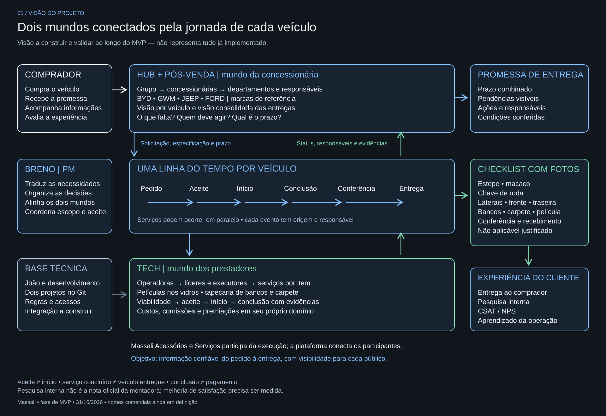

Desenhos e mapas do projeto
Um acervo visual organizado pelas três frentes, incluindo os desenhos já construídos e os novos fluxos detalhados.
Mapa que define o produto conectado

Um fluxo completo por projeto



Desenho de concepção da operação Tech

Neste desenho, “três frentes conectadas” identifica os blocos internos de execução, remuneração e cobrança da Tech. Os três projetos do portal são Hub, Linha do Tempo e Tech. Referência visual a fornecedor financeiro é conceitual: não define provedor contratado nem integração bancária ativa. O fluxo e os contratos da documentação textual determinam os marcos e limites.
Desenho de agentes por capacidade


Os agentes são propostas de capacidades, não uma frota comprovadamente implantada. Consulta, explicação, comparação e preparação de ação não concedem autorização para promessa comercial, alteração de agendamento, classificação de responsabilidade ou movimentação financeira. O agente de qualidade lida com o recorte de serviços definido; uma imagem ilustrativa não amplia o escopo para mecânica.
| Capacidade proposta | Pode preparar | Depende de aprovação / regra |
|---|---|---|
| Atendimento | Resposta contextual e triagem | Promessas especiais, descontos e compromissos. |
| Operação | Conferência de campos e indicação de pendências | Confirmação e mudança de prazo/agendamento. |
| Qualidade | Reunir evidências e explicar ocorrência | Responsabilidade, garantia e reembolso. |
| Remuneração | Explicar memória e conferir regra | Vigência, liberação e pagamento. |
| Financeiro | Comparar registros e alertar pendência | Acordos, baixas, estornos e transferências. |
| Margem | Explicar composição e faltas | Preço e condições comerciais. |
| Vigilância | Observar estados e registrar sinais | Acesso e atuação restritos ao escopo aprovado. |
Mapa editável da visão de conjunto

